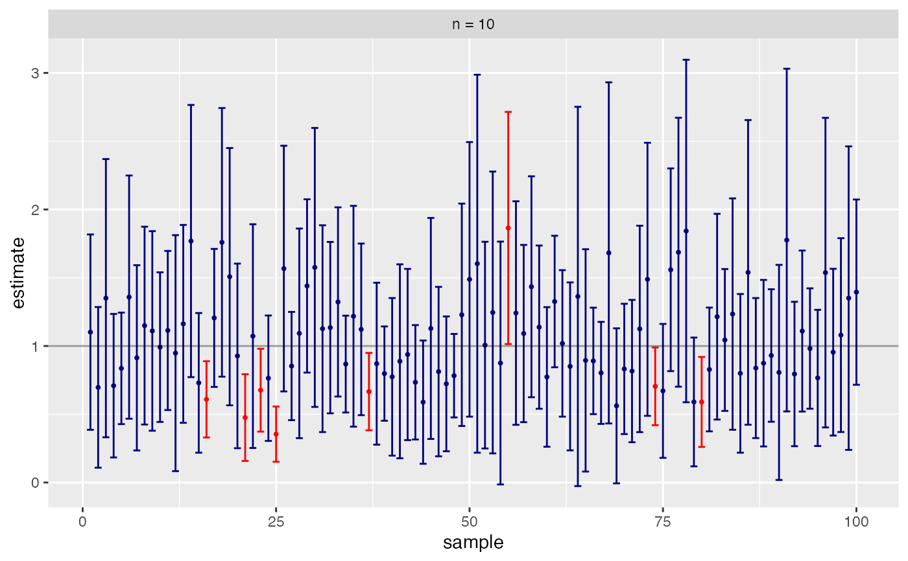
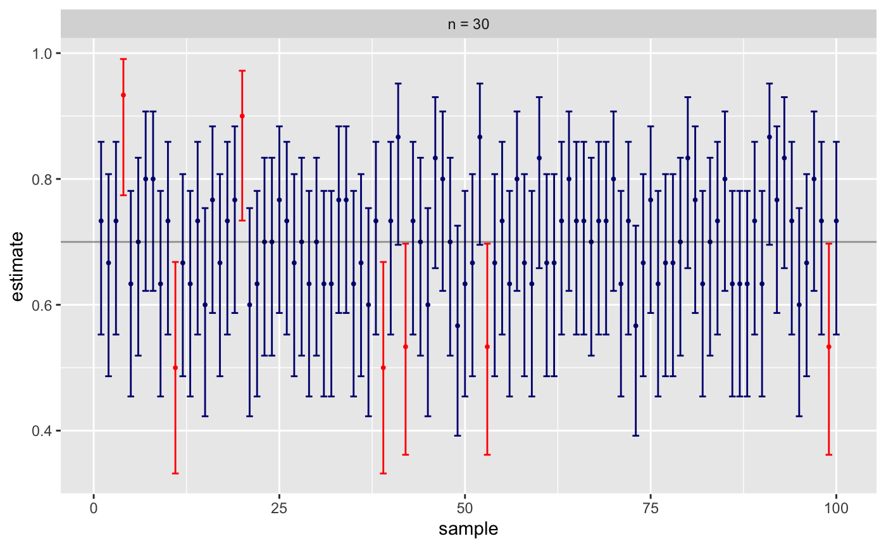

This function automates the calculation of coverage rates for exploring the robustness of confidence interval methods.
CIsim(n, samples = 100, rdist = rnorm, args = list(), plot = if (samples <= 200) "draw" else "none", estimand = 0, conf.level = 0.95, method = t.test, method.args = list(), interval = function(x) { do.call(method, c(list(x, conf.level = conf.level), method.args))$conf.int }, estimate = function(x) { do.call(method, c(list(x, conf.level = conf.level), method.args))$estimate }, verbose = TRUE)
| n | size of each sample |
|---|---|
| samples | number of samples to simulate |
| rdist | function used to draw random samples |
| args | arguments required by |
| plot | one of |
| estimand | true value of the parameter being estimated |
| conf.level | confidence level for intervals |
| method | function used to compute intervals. Standard functions that
produce an object of class |
| method.args | arguments required by |
| interval | a function that computes a confidence interval from data. Function should return a vector of length 2. |
| estimate | a function that computes an estimate from data |
| verbose | print summary to screen? |
A data frame with variables
lower,
upper,
estimate,
cover ('Yes' or 'No'),
and
sample
is returned invisibly. See the examples for a way to use this to display the intervals
graphically.
# 1000 95% intervals using t.test; population is N(0,1) CIsim(n=10, samples=1000)#>#> #> #># this time population is Exp(1); fewer samples, so we get a plot CIsim(n=10, samples=100, rdist=rexp, estimand=1)#>#> #> #># Binomial treats 1 like success, 0 like failure CIsim(n=30, samples=100, rdist=rbinom, args=list(size=1, prob=.7), estimand = .7, method = binom.test, method.args=list(ci = "Plus4"))#>#> #> #>